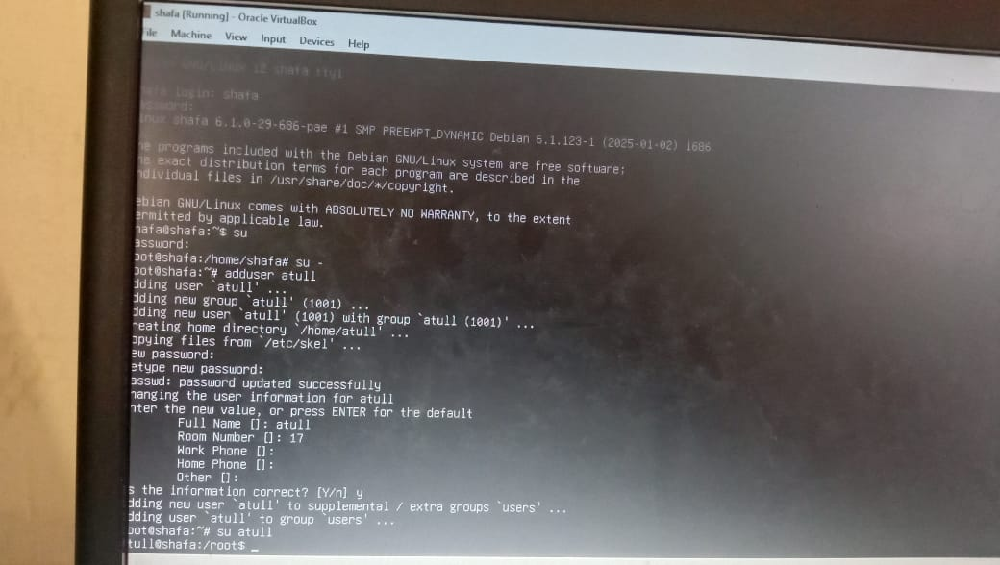

Selama saya belajar di SMKN, saya mendapatkan pengalaman langsung dalam menginstal sistem operasi Debian, salah satu distro Linux yang andal dan banyak digunakan untuk server. Instalasinya bukan sekadar klik-klik, tapi penuh pemahaman, mulai dari partisi, user, hingga konfigurasi jaringan.
Instalasi Debian mengajarkan saya bahwa dunia server dimulai dari layar hitam dan baris-baris penuh makna.
Setelah sistem terpasang, saya menjelajahi dunia command line. Beberapa perintah yang saya pelajari adalah:
Setiap baris perintah seperti kunci pembuka dunia Linux yang penuh kekuatan tersembunyi.
Saya juga mempelajari perintah systemctl, seperti:
sudo systemctl start nginxsudo systemctl status apache2Perintah ini memberi saya kendali penuh atas layanan yang berjalan di sistem.
Untuk manajemen aplikasi, saya menggunakan APT (Advanced Package Tool), seperti:
apt update, apt install, apt remove, dan lainnyaAPT bukan sekadar alat instalasi, tapi gerbang menuju gudang aplikasi dunia open-source.
Dalam konfigurasi jaringan, saya belajar:
ping dan ipMengatur jaringan membuat saya merasa seperti teknisi yang sedang menyambungkan seluruh dunia lewat kabel dan IP.
Saya juga mempelajari DNS (Domain Name System) yang menerjemahkan alamat seperti google.com menjadi IP server, dan gateway sebagai gerbang keluar dari jaringan lokal. Di balik loading halaman website, ada proses rumit yang kini bisa saya pahami dan atur sendiri.
Semua ini membuka wawasan saya tentang profesi system administrator: pekerjaan yang sering tak terlihat, tapi sangat penting menjaga sistem tetap hidup dan stabil.
Berikut dokumentasi hasil praktikum Instalasi Debian dan Administrasi Sistem:
